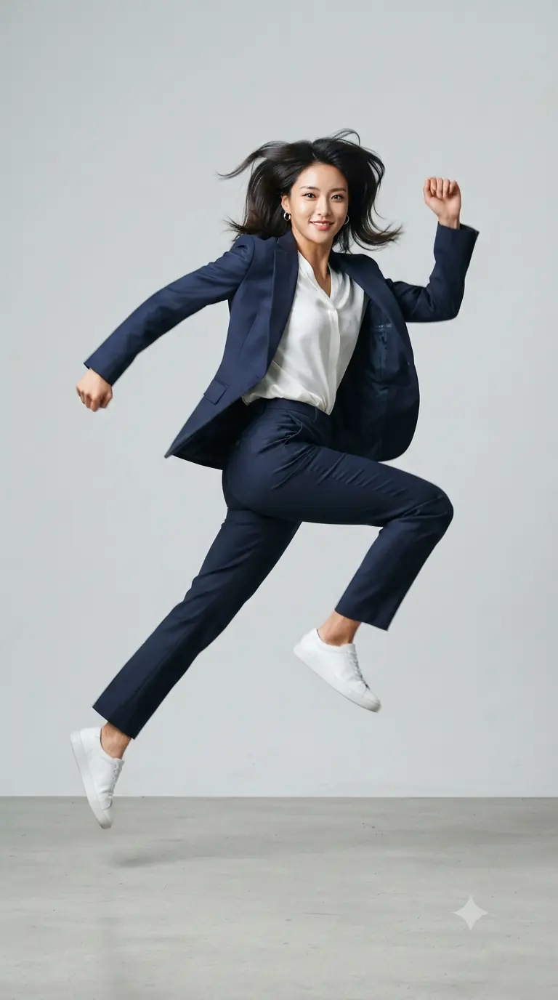
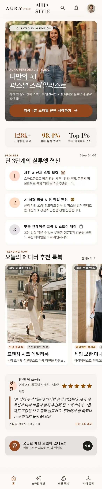

auto_awesome
Curated by AI Edition
Aura Personal Styling
나만의 AI
나만의 AI
퍼스널 스타일리스트
사진 한 장과 신체 스펙으로 발견하는 가장 나다운 실루엣과 감각적인 룩
Process
Step 01-03
AURA STYLE 이용 흐름
※ AI 스타일 진단 기능은 현재 준비 중입니다. 아래는 서비스 이용 흐름 안내이며, 지금은 스타일링 가이드를 먼저 이용하실 수 있습니다.
1
사진 & 신체 스펙 입력
photo_camera
전신 사진 1장과 신장, 몸무게 정보를 바탕으로 체형 특징을 파악합니다.
2
AI 체형 비율 & 톤 진단
neurology
체형 비율과 퍼스널 컬러 팔레트를 바탕으로 어울리는 실루엣과 색상을 분석합니다.
3
맞춤 룩북 추천
shopping_bag
무드별 코디 예시와 아이템 구성 팁을 확인하세요.
Trending Now
가이드 보기
chevron_right
오늘의 에디터 추천 룩북
Concept Preview
서비스 화면 시안

psychology_alt
궁금한 체형 고민이 있나요?
체형별 스타일링 가이드 읽기